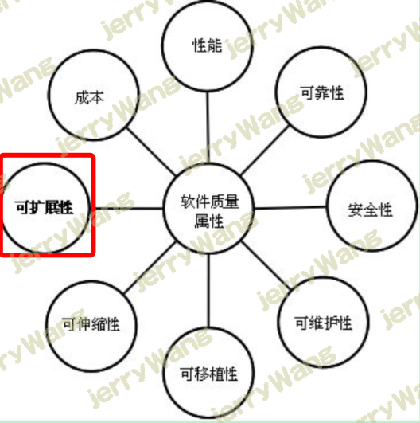
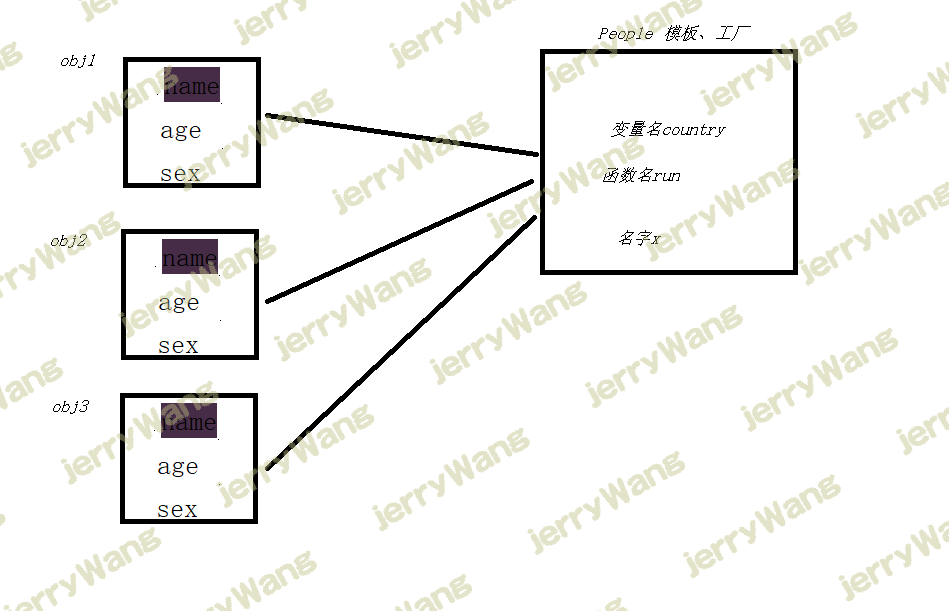
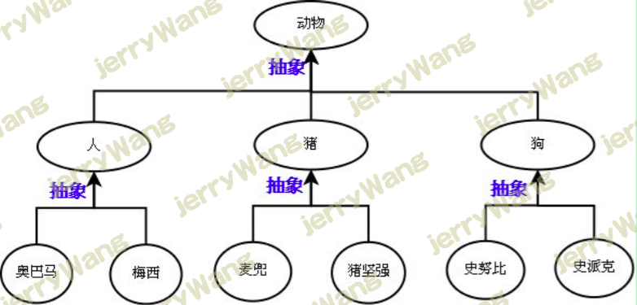
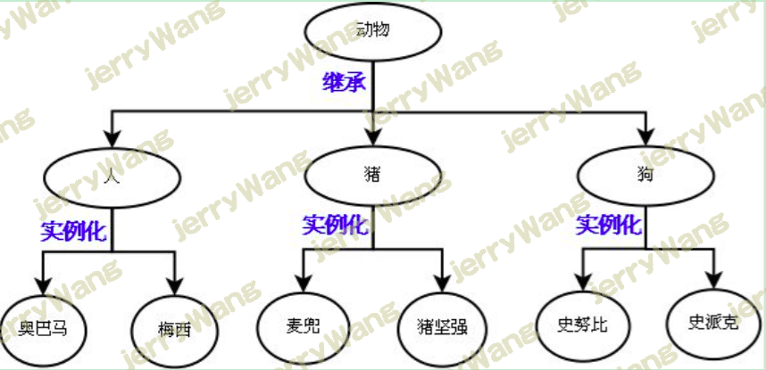
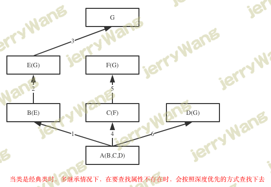

类（class）: 定义了一件事物的抽象特点。 对象（object）：是类的实例。在操作系统中，系统给对象分配内存空间，而不会给类分配内存空间。 继承（inheritance）：是指通过一个已有的类(父类)定义另外一个类(子类),子类共享父类开放的属性和方法。 封装性（Excapsulation）：封装性是指类在定义时可以将不能或不需要其他类知道的成员定义成私有成员，而只公开其他类需要的使用的成员，以达到信息隐蔽和简单化的作用。 多态性(Polymorphism)：是指同一方法作用于不同对象身上，可以有不同的解释，产生不同的执行结果。在具体的实现方式上，多态性是允许开发者将父对象的变量设置为对子对象的引用，赋值后，父对象变量就可以根据当前的赋值给他的子对象的特性以不同的方式运作。 面向对象编程 面向过程 与 面向对象 面向过程的程序设计：核心是过程二字，过程指的是解决问题的步骤，即先干什么再干什么……面向过程的设计就好比精心设计好一条流水线，是一种机械式的思维方式。
优点是：复杂度的问题流程化，进而简单化（一个复杂的问题，分成一个个小的步骤去实现，实现小的步骤将会非常简单）
缺点是：一套流水线或者流程就是用来解决一个问题，生产汽水的流水线无法生产汽车，即便是能，也得是大改，改一个组件，牵一发而动全身。
应用场景：一旦完成基本很少改变的场景，著名的例子有Linux內核，git，以及Apache HTTP Server等。
面向对象的程序设计：核心是对象二字，（要理解对象为何物，必须把自己当成上帝，上帝眼里世间存在的万物皆为对象，不存在的也可以创造出来。面向对象的程序设计好比如来设计西游记，如来要解决的问题是把经书传给东土大唐，如来想了想解决这个问题需要四个人：唐僧，沙和尚，猪八戒，孙悟空，每个人都有各自的特征和技能（这就是对象的概念，特征和技能分别对应对象的数据属性和方法属性），然而这并不好玩，于是如来又安排了一群妖魔鬼怪，为了防止师徒四人在取经路上被搞死，又安排了一群神仙保驾护航，这些都是对象。然后取经开始，师徒四人与妖魔鬼怪神仙交互着直到最后取得真经。如来根本不会管师徒四人按照什么流程去取),对象是特征与技能的结合体，基于面向对象设计程序就好比在创造一个世界，你就是这个世界的上帝，存在的皆为对象，不存在的也可以创造出来，与面向过程机械式的思维方式形成鲜明对比，面向对象更加注重对现实世界的模拟，是一种“上帝式”的思维方式。
优点是：
缺点：
编程的复杂度远高于面向过程，不了解面向对象而立即上手基于它设计程序，极容易出现过度设计的问题。一些扩展性要求低的场景使用面向对象会徒增编程难度，比如管理linux系统的shell脚本就不适合用面向对象去设计，面向过程反而更加适合。
无法向面向过程的程序设计流水线式的可以很精准的预测问题的处理流程与结果，面向对象的程序一旦开始就由对象之间的交互解决问题，即便是上帝也无法准确地预测最终结果。于是我们经常看到对战类游戏，新增一个游戏人物，在对战的过程中极容易出现BUG的技能，一刀砍死3个人，这种情况是无法准确预知的，只有对象之间交互才能准确地知道最终的结果。
应用场景：需求经常变化的软件，一般需求的变化都集中在用户层，互联网应用，企业内部软件，游戏等都是面向对象的程序设计大显身手的好地方
面向对象的程序设计并不是全部。对于一个软件质量来说，面向对象的程序设计只是用来解决扩展性。
百度百科
抽象理解 类即类别、种类，是面向对象设计最重要的概念，对象是特征与技能的结合体，而类则是一系列对象相似的特征与技能的结合体
那么问题来了，先有的一个个具体存在的对象（比如一个具体存在的人），还是先有的人类这个概念，这个问题需要分两种情况去看
在现实世界中：先有对象，再有类
世界上肯定是先出现各种各样的实际存在的物体，然后随着人类文明的发展，人类站在不同的角度总结出了不同的种类，如人类、动物类、植物类等概念
也就说，对象是具体的存在，而类仅仅只是一个概念，并不真实存在
在程序中：务必保证先定义类，后产生对象
这与函数的使用是类似的，先定义函数，后调用函数，类也是一样的，在程序中需要先定义类，后调用类
不一样的是，调用函数会执行函数体代码返回的是函数体执行的结果，而调用类会产生对象，返回的是对象
类是一系列对象相似的特征与技能的结合体
对象是特征与技能的结合体，在程序中
按照上述步骤，我们来定义一个类（我们站在学校的角度去看，在座的各位都是学生）
在现实世界中：先有对象，再有类
1 2 3 4 5 6 7 8 9 10 11 12 13 14 15 16 17 18 19 20 21 22 对象1 ：李坦克 特征: 学校=beida 姓名=李大牛 性别=男 年龄=19 技能： 学习 吃饭 睡觉 对象2 ：王大炮 特征: 学校=beida 姓名=王大炮 性别=女 年龄=38 技能： 学习 吃饭 睡觉
对象的概念 ”面向对象“的核心是“对象”二字，而对象的精髓在于“整合“
所有的程序都是由”数据”与“功能“组成，因而编写程序的本质就是定义出一系列的数据，然后定义出一系列的功能来对数据进行操作。在学习”对象“之前，程序中的数据与功能是分离开的，如下
1 2 3 4 5 6 7 8 9 10 11 name='lili' age=18 sex='female' def tell_info (name,age,sex ): print ('<%s:%s:%s>' %(name,age,sex)) tell_info(name,age,sex)
在学习了“对象”之后，我们就有了一个容器，该容器可以盛放数据与功能，所以我们可以说：对象是把数据与功能整合到一起的产物，或者说”对象“就是一个盛放数据与功能的容器/箱子/盒子。
如果把”数据“比喻为”睫毛膏“、”眼影“、”唇彩“等化妆所需要的原材料；把”功能“比喻为眼线笔、眉笔等化妆所需要的工具，那么”对象“就是一个彩妆盒，彩妆盒可以把”原材料“与”工具“都装到一起
在了解了对象的基本概念之后，理解面向对象的编程方式就相对简单很多了，面向对象编程就是要造出一个个的对象，把原本分散开的相关数据与功能整合到一个个 的对象里，这么做既方便使用，也可以提高程序的解耦合程度，进而提升了程序的可扩展性（需要强调的是，软件质量属性包含很多方面，面向对象解决的仅仅只是 扩展性问题）
类与对象 基本使用 在程序中：先定义类，后产生对象
1 2 3 4 5 6 7 8 9 10 11 12 13 14 15 16 17 18 19 20 21 22 23 24 25 26 27 28 29 30 PS: 1. 在程序中特征用变量标识，技能用函数标识 2. 因而类中最常见的无非是：变量和函数的定义 class BeidaStudent (): school='beida' def learn (self ): print ('is learning' ) def eat (self ): print ('is eating' ) def sleep (self ): print ('is sleeping' ) BeidaStudent.school='清华' print (BeidaStudent.school) obj1=BeidaStudent() obj1.eat() obj1.school='北大' print (obj1.school) print (BeidaStudent.school)
通过在类后面加小括号可以直接实例化类来获得对象变量,使用对象变量可以访问类的成员变量以及成员函数.
类的用法 注意：
类中可以有任意python代码，这些代码在类定义阶段便会执行 因而会产生新的名称空间，用来存放类的变量名与函数名，可以通过BeidaStudent.__dict__查看 对于经典类来说我们可以通过该字典操作类名称空间的名字（新式类有限制），但python为我们提供专门的.语法 点是访问属性的语法，类中定义的名字，都是类的属性 类的用法.:专门用来访问属性，本质操作的就是__dict__BeidaStudent.__dict__['school']BeidaStudent.__dict__['school']='beida'BeidaStudent.__dict__['x']=1BeidaStudent.__dict__.pop('x')
构造函数 构造函数是一种特殊的处理方法,用来在创建对象的时候初始化对象,即为对象变量赋初始值.
Python中类的构造函数用__init__命名
程序中的对象
如此，s1、s2、s3都一样了，而这三者除了相似的属性之外还各种不同的属性，这就用到了__init__注意：该方法是在对象产生之后才会执行，只用来为对象进行初始化操作，可以有任意代码，但一定不能有返回值
1 2 3 4 5 6 7 8 9 10 11 12 13 14 15 16 17 18 class BeidaStudent : def __init__ (self,name,age,sex ): self.name=name self.age=age self.sex=sex s1=BeidaStudent('李大牛' ,'男' ,18 ) s2=BeidaStudent('王大炮' ,'女' ,38 ) print (s2.__dict__) s2.name s2.name='王三炮' s2.course='python' del s2.course
__init__方法之为对象定制自己独有的特征 该函数会在调用类时自动触发执行
1 2 3 4 5 6 7 8 9 10 11 12 13 14 15 16 17 18 19 20 21 22 23 24 25 26 27 28 29 30 31 32 33 34 35 36 37 38 39 40 41 42 43 44 45 46 47 48 49 50 51 52 53 54 55 56 57 58 59 60 61 62 63 64 65 66 67 68 69 70 71 72 73 74 75 76 77 78 79 80 81 82 83 84 85 86 87 88 89 90 91 92 93 94 95 96 97 98 99 100 101 102 103 104 105 106 107 108 109 110 111 112 113 114 115 116 117 118 119 120 121 122 123 124 125 class People : country='China' x=1 def run (self ): print ('----->' , self) obj1=People() obj2=People() obj3=People() obj1.name='allen' obj1.age=18 obj1.sex='male' obj2.name='lxx' obj2.age=38 obj2.sex='female' obj3.name='alex' obj3.age=38 obj3.sex='female' class People : country='China' x=1 def run (self ): print ('----->' , self) obj1=People() obj2=People() obj3=People() def chu_shi_hua (obj, x, y, z ): obj.name = x obj.age = y obj.sex = z chu_shi_hua(obj1,'allen' ,18 ,'male' ) chu_shi_hua(obj2,'lxx' ,38 ,'female' ) chu_shi_hua(obj3,'alex' ,38 ,'female' ) class People : country='China' x=1 def chu_shi_hua (obj, x, y, z ): obj.name = x obj.age = y obj.sex = z def run (self ): print ('----->' , self) obj1=People() People.chu_shi_hua(obj1,'allen' ,18 ,'male' ) obj2=People() People.chu_shi_hua(obj2,'lxx' ,38 ,'female' ) obj3=People() People.chu_shi_hua(obj3,'alex' ,38 ,'female' ) class People : country='China' x=1 def __init__ (obj, x, y, z ): obj.name = x obj.age = y obj.sex = z def run (self ): print ('----->' , self) obj1=People('allen' ,18 ,'male' ) obj2=People('lxx' ,38 ,'female' ) obj3=People('alex' ,38 ,'female' ) class People : country='China' x=1 def __init__ (obj, name, age, sex ): obj.name = name obj.age = age obj.sex = sex def run (self ): print ('----->' , self) obj1=People('allen' ,18 ,'male' )
PS：
站的角度不同，定义出的类是截然不同的，详见面向对象实战之需求分析
现实中的类并不完全等于程序中的类，比如现实中的公司类，在程序中有时需要拆分成部门类，业务类……
有时为了编程需求，程序中也可能会定义现实中不存在的类，比如策略类，现实中并不存在，但是在程序中却是一个很常见的类
析构函数 析构函数是构造函数的反函数,在销毁(释放)对象时调用它们.析构函数往往用来做“清理善后”的工作.
例如数据库链接对象可以在析构函数中释放对数据库资源的占用.
Python中为类定义析构函数的方式是:在类中定义一个__del__的没有返回值和参数的函数.
注：如果产生的对象仅仅只是python程序级别的（用户级），那么无需定义del ,如果产生的对象的同时还会向操作系统发起系统调用，即一个对象有用户级与内核级两种资源，比如（打开一个文件，创建一个数据库链接），则必须在清除对象的同时回收系统资源，这就用到了__del__
1 2 3 4 5 6 7 8 9 10 11 12 13 14 15 16 17 18 19 class BeidaStudent : def __init__ (self,name,age,sex ): self.name=name self.age=age self.sex=sex def run (self ): print (self.name) def __del__ (self ): print ("对象实例化结束" ) s1=BeidaStudent('李大牛' ,'男' ,18 ) s1.run()
典型的应用场景：
创建数据库类，用该类实例化出数据库链接对象，对象本身是存放于用户空间内存中，而链接则是由操作系统管理的，存放于内核空间内存中
当程序结束时，python只会回收自己的内存空间，即用户态内存，而操作系统的资源则没有被回收，这就需要我们定制__del__，在对象被删除前向操作系统发起关闭数据库链接的系统调用，回收资源
这与文件处理是一个道理：
1 2 3 4 5 6 7 8 f=open ('a.txt' ) del f f=open ('a.txt' ) 读写... f.close() 很多情况下大家都容易忽略f.close,这就用到了with 上下文管理
类的特殊属性 (了解即可)
1 2 3 4 5 6 7 8 9 类名.__name__ 类名.__doc__ 类名.__base__ 类名.__bases__ 类名.__dict__ 类名.__module__ 类名.__class__
从代码级别看面向对象 数据与专门操作该数据的功能组合到一起
1 2 3 4 5 6 7 8 9 10 11 12 13 14 15 16 17 18 19 20 21 22 23 24 25 26 27 28 29 30 31 32 33 34 35 36 37 38 39 40 41 42 43 44 45 46 47 48 49 50 51 52 53 54 55 56 57 58 59 60 61 62 63 64 65 66 67 68 69 70 71 72 73 74 75 76 77 78 79 80 81 82 83 def exc1 (host,port,db,charset ): conn=connect(host,port,db,charset) conn.execute(sql) return xxx def exc2 (host,port,db,charset,proc_name ) conn=connect(host,port,db,charset) conn.call_proc(sql) return xxx exc1('127.0.0.1' ,3306 ,'db1' ,'utf8' ,'select * from tb1;' ) exc2('127.0.0.1' ,3306 ,'db1' ,'utf8' ,'存储过程的名字' ) HOST=‘127.0 .0 .1 ’ PORT=3306 DB=‘db1’ CHARSET=‘utf8’ def exc1 (host,port,db,charset ): conn=connect(host,port,db,charset) conn.execute(sql) return xxx def exc2 (host,port,db,charset,proc_name ) conn=connect(host,port,db,charset) conn.call_proc(sql) return xxx exc1(HOST,PORT,DB,CHARSET,'select * from tb1;' ) exc2(HOST,PORT,DB,CHARSET,'存储过程的名字' ) class MySQLHandler : def __init__ (self,host,port,db,charset='utf8' ): self.host=host self.port=port self.db=db self.charset=charset def exc1 (self,sql ): conn=connect(self.host,self.port,self.db,self.charset) res=conn.execute(sql) return res def exc2 (self,sql ): conn=connect(self.host,self.port,self.db,self.charset) res=conn.call_proc(sql) return res obj=MySQLHandler('127.0.0.1' ,3306 ,'db1' ) obj.exc1('select * from tb1;' ) obj.exc2('存储过程的名字' ) class MySQLHandler : def __init__ (self,host,port,db,charset='utf8' ): self.host=host self.port=port self.db=db self.charset=charset self.conn=connect(self.host,self.port,self.db,self.charset) def exc1 (self,sql ): return self.conn.execute(sql) def exc2 (self,sql ): return self.conn.call_proc(sql) obj=MySQLHandler('127.0.0.1' ,3306 ,'db1' ) obj.exc1('select * from tb1;' ) obj.exc2('存储过程的名字' )
属性查找 类有两种属性：数据属性和函数属性
1. 类的数据属性是所有对象共享的
2. 类的函数属性是绑定给对象用的
1 2 3 4 5 6 7 8 9 10 11 12 13 14 15 16 17 18 19 20 21 22 23 24 25 26 27 28 29 30 31 32 33 34 35 36 37 38 39 40 41 42 43 44 45 class BeidaStudent : school='北大' def __init__ (self,name,age,sex ): self.name=name self.age=age self.sex=sex def run (self ): print (self.name) s1=BeidaStudent('李大牛' ,'男' ,18 ) s2=BeidaStudent('大锤' ,'男' ,11 ) s3=BeidaStudent('赵三' ,'男' ,16 ) print (id (BeidaStudent.school))print (id (s1.school))print (id (s2.school))print (id (s3.school))''' 4332785800 4332785800 4332785800 4332785800 ''' print (BeidaStudent.run)print (s1.run)print (s2.run)print (s3.run)''' <function BeidaStudent.run at 0x102c22730> <bound method BeidaStudent.run of <__main__.BeidaStudent object at 0x102c1e6a0>> <bound method BeidaStudent.run of <__main__.BeidaStudent object at 0x102c1e7f0>> <bound method BeidaStudent.run of <__main__.BeidaStudent object at 0x102c1e780>> '''
在obj.name会先从obj自己的名称空间里找name，找不到则去类中找，类也找不到就找父类…最后都找不到就抛出异常
绑定到对象的方法的特殊之处 1 2 3 4 5 6 7 8 9 10 11 12 13 14 15 16 17 18 19 20 21 class BeidaStudent : school='Beida' def __init__ (self,name,age,sex ): self.name=name self.age=age self.sex=sex def learn (self ): print ('%s is learning' %self.name) def eat (self ): print ('%s is eating' %self.name) def sleep (self ): print ('%s is sleeping' %self.name) s1=BeidaStudent('李坦克' ,'男' ,18 ) s2=BeidaStudent('王大炮' ,'女' ,38 ) s3=BeidaStudent('牛榴弹' ,'男' ,78 )
类中定义的函数（没有被任何装饰器装饰的）是类的函数属性，类可以使用，但必须遵循函数的参数规则，有几个参数需要传几个参数
1 2 3 BeidaStudent.learn(s1) BeidaStudent.learn(s2) BeidaStudent.learn(s3)
类中定义的函数（没有被任何装饰器装饰的）,其实主要是给对象使用的，而且是绑定到对象的，虽然所有对象指向的都是相同的功能，但是绑定到不同的对象就是不同的绑定方法
强调：绑定到对象的方法的特殊之处在于，绑定给谁就由谁来调用，谁来调用，就会将‘谁’本身当做第一个参数传给方法，即自动传值（方法init 也是一样的道理）
1 2 3 s1.learn() s2.learn() s3.learn()
注意：绑定到对象的方法的这种自动传值的特征，决定了在类中定义的函数都要默认写一个参数self，self可以是任意名字，但是约定俗成地写出self。
类即类型
提示：python的class术语与c++有一定区别，与 Modula-3更像。
python中一切皆为对象，且python3中类与类型是一个概念，类型就是类
1 2 3 4 5 6 7 8 9 10 11 12 13 14 15 16 17 18 19 20 21 22 23 24 25 26 27 28 29 >>> list <class 'list' > >>> l1=list ()>>> l2=list ()>>> l3=list ()>>> l1.append<built-in method append of list object at 0x10b482b48 > >>> l2.append<built-in method append of list object at 0x10b482b88 > >>> l3.append<built-in method append of list object at 0x10b482bc8 > >>> l1.append(3 )>>> l1[3 ] >>> l2[] >>> l3[] >>> list .append(l3,111 ) >>> l3[111 ]
对象之间的交互 1 2 3 4 5 6 7 8 class Garen : camp='Demacia' def __init__ (self,nickname,aggressivity=58 ,life_value=455 ): self.nickname=nickname self.aggressivity=aggressivity self.life_value=life_value def attack (self,enemy ): enemy.life_value-=self.aggressivity
我们可以仿照garen类再创建一个Riven类
1 2 3 4 5 6 7 8 class Riven : camp='Noxus' def __init__ (self,nickname,aggressivity=54 ,life_value=414 ): self.nickname=nickname self.aggressivity=aggressivity self.life_value=life_value def attack (self,enemy ): enemy.life_value-=self.aggressivity
实例出俩英雄
1 2 3 4 5 6 7 8 9 10 11 12 >>> g1=Garen('草丛伦' )>>> r1=Riven('锐雯雯' )```python 交互：锐雯雯攻击草丛伦，反之一样 ```python >>> g1.life_value455 >>> r1.attack(g1)>>> g1.life_value401
上边看懂了,就看看优化后的代码吧
1 2 3 4 5 6 7 8 9 10 11 12 13 14 15 16 17 18 19 20 21 22 23 24 25 26 class YingXiong : def __init__ (self,nickname,aggressivity,life_value,camp ): self.nickname=nickname self.aggressivity=aggressivity self.life_value=life_value self.camp=camp def attack (self,enemy ): if self.camp!=enemy.camp: print ('阵营分别来自：' ,self.camp,enemy.camp) enemy.life_value-=self.aggressivity gaiLun=YingXiong('盖伦' ,11 ,60 ,'Demacia' ) ruiWen=YingXiong('锐雯' ,22 ,30 ,'Noxus' ) gaiLun.attack(ruiWen) print (ruiWen.life_value) ruiWen.attack(gaiLun) print (gaiLun.life_value) ‘’‘ 阵营分别来自： Demacia Noxus 19 阵营分别来自： Noxus Demacia 38 ’‘’
补充：
garen_hero.Q()称为向garen_hero这个对象发送了一条消息，让他去执行Q这个功能，类似的有：
garen_hero.W()
garen_hero.E()
garen_hero.R()
封装 引入 面向对象编程有三大特性：封装、继承、多态，其中最重要的一个特性就是封装。封装指的就是把数据与功能都整合到一起，听起来是不是很熟悉，没错我们之前所说的”整合“二字其实就是封装的通俗说法。
封装的真谛在于明确地区分内外，封装的属性可以直接在内部使用，而不能被外部直接使用，然而定义属性的目的终归是要用，外部要想用类隐藏的属性，需要我们为其开辟接口，让外部能够间接地用到我们隐藏起来的属性
除此之外，针对封装到对象或者类中的属性，我们还可以严格控制对它们的访问，分两步实现：隐藏与开放接口
隐藏属性 Python的Class机制采用双下划线开头的方式将属性隐藏起来（设置成私有的），但其实这仅仅只是一种变形操作，类中所有双下滑线开头的属性都会在类定义阶段、检测语法时自动变成“类名_ 属性名”的形式：
1 2 3 4 5 6 7 8 9 10 11 12 13 14 15 16 class Foo : __N=0 def __init__ (self ): self.__x=10 def __f1 (self ): print ('__f1 run' ) def f2 (self ): self.__f1() print (Foo.__N) obj = Foo() print (obj.__x)
这种变形需要注意的问题是：
1、在类外部无法直接访问双下滑线开头的属性，但知道了类名和属性名就可以拼出名字：类名`_ 属性，然后就可以访问了，如Foo. _Foo__N`，所以说这种操作并没有严格意义上地限制外部访问，仅仅只是一种语法意义上的变形。
1 2 3 4 5 6 7 8 9 10 11 12 >>> Foo.__dict__mappingproxy({..., '_Foo__N' : 0 , ...}) >>> obj.__dict__{'_Foo__x' : 10 } >>> Foo._Foo__N0 >>> obj._Foo__x10 >>> obj._Foo__N0
2、在类内部是可以直接访问双下滑线开头的属性的，比如self.__f1()，因为在类定义阶段类内部双下滑线开头的属性统一发生了变形。
3、变形操作只在类定义阶段发生一次,在类定义之后的赋值操作，不会变形。
1 2 3 4 5 6 7 8 9 10 11 >>> Foo.__M=100 >>> Foo.__dict__mappingproxy({..., '__M' : 100 ,...}) >>> Foo.__M100 >>> obj.__y=20 >>> obj.__dict__{'__y' : 20 , '_Foo__x' : 10 } >>> obj.__y20
开放接口 定义属性就是为了使用，所以隐藏并不是目的
隐藏数据属性 将数据隐藏起来就限制了类外部对数据的直接操作，然后类内应该提供相应的接口来允许类外部间接地操作数据，接口之上可以附加额外的逻辑来对数据的操作进行严格地控制
1 2 3 4 5 6 7 8 9 10 11 12 13 14 15 16 17 18 19 20 21 22 23 24 >>> class Teacher :... def __init__ (self,name,age ): ... self.__name=name... self.__age=age... def tell_info (self ): ... print ('姓名:%s,年龄:%s' %(self.__name,self.__age))... def set_info (self,name,age ): ... if not isinstance (name,str ):... raise TypeError('姓名必须是字符串类型' )... if not isinstance (age,int ):... raise TypeError('年龄必须是整型' )... self.__name=name... self.__age=age... >>> >>> t=Teacher('lili' ,18 )>>> t.set_info(‘LiLi',' 19 ') # 年龄不为整型，抛出异常 Traceback (most recent call last): File "<stdin>", line 1, in <module> File "<stdin>", line 11, in set_info TypeError: 年龄必须是整型 >>> t.set_info(' LiLi',19) # 名字为字符串类型，年龄为整形，可以正常设置 >>> t.tell_info() # 查看老师的信息 姓名:LiLi,年龄:19
隐藏函数属性 目的是为了隔离复杂度，例如ATM程序的取款功能,该功能有很多其他功能组成，比如插卡、身份认证、输入金额、打印小票、取钱等，而对使用者来说,只需要开发取款这个功能接口即可,其余功能我们都可以隐藏起来
1 2 3 4 5 6 7 8 9 10 11 12 13 14 15 16 17 18 19 20 >>> class ATM :... def __card (self ): ... print ('插卡' )... def __auth (self ): ... print ('用户认证' )... def __input (self ): ... print ('输入取款金额' )... def __print_bill (self ): ... print ('打印账单' )... def __take_money (self ): ... print ('取款' )... def withdraw (self ): ... self.__card()... self.__auth()... self.__input ()... self.__print_bill()... self.__take_money()... >>> obj=ATM()>>> obj.withdraw()
总结隐藏属性与开放接口，本质就是为了明确地区分内外，类内部可以修改封装内的东西而不影响外部调用者的代码；而类外部只需拿到一个接口，只要接口名、参数不变，则无论设计者如何改变内部实现代码，使用者均无需改变代码。这就提供一个良好的合作基础，只要接口这个基础约定不变，则代码的修改不足为虑。
property 函数变数据属性 Python专门提供 了一个装饰器property，可以将类中的函数“伪装成”对象的数据属性，对象在访问该特殊属性时会触发功能的执行，然后将返回值作为本次访问的结果， 例如
体质指数（BMI）=体重（kg）÷身高^2（m）
1 2 3 4 5 6 7 8 9 10 11 12 13 >>> class People :... def __init__ (self,name,weight,height ):... self.name=name... self.weight=weight... self.height=height... @property ... def bmi (self ):... return self.weight / (self.height**2 )... >>> obj=People('lili' ,75 ,1.85 )>>> obj.bmi 21.913805697589478 >>> obj.bmi()
使用property有效地保证了属性访问的一致性。另外property还提供设置和删除属性的功能，如下
1 2 3 4 5 6 7 8 9 10 11 12 13 14 15 16 17 18 19 20 21 >>> class Foo :... def __init__ (self,val ):... self.__NAME=val ... @property ... def name (self ):... return self.__NAME... @name.setter... def name (self,value ):... if not isinstance (value,str ): ... raise TypeError('%s must be str' %value)... self.__NAME=value ... @name.deleter... def name (self ):... raise PermissionError('Can not delete' )... >>> f=Foo('lili' )>>> f.namelili >>> f.name='LiLi' >>> f.name=123 >>> del f.name
防止子类覆盖父类 父类如果不想让子类覆盖自己的方法，可以采用双下划线开头的方式将方法设置为私有的
1 2 3 4 5 6 7 8 9 10 11 12 13 14 15 16 >>> class Foo :... def __f1 (self ): ... print ('Foo.f1' ) ... def f2 (self ):... print ('Foo.f2' )... self.__f1() ... >>> class Bar (Foo ):... def __f1 (self ): ... print ('Bar.f1' )... >>> >>> b=Bar()>>> b.f2() Foo.f2 Foo.f1
继承与派生 继承 初识继承 什么是继承
继承是一种创建新类的方式， 新建的类可以继承一个或多个父类（python支持多继承），父类又可称为基类或超类，新建的类称为派生类或子类。
子类会“”遗传”父类的属性，从而解决代码重用问题
python中类的继承分为：单继承和多继承
1 2 3 4 5 6 7 8 9 10 11 class ParentClass1 : pass class ParentClass2 : pass class SubClass1 (ParentClass1 ): pass class SubClass2 (ParentClass1,ParentClass2): pass
查看继承
1 2 3 4 >>> SubClass1.__bases__ (<class '__main__.ParentClass1' >,) >>> SubClass2.__bases__(<class '__main__.ParentClass1' >, <class '__main__.ParentClass2' >)
经典类与新式类
1 2 3 4 5 1. 只有在python2中才分新式类和经典类，python3中统一都是新式类2. 在python2中，没有显式的继承object 类的类，以及该类的子类，都是经典类3. 在python2中，显式地声明继承object 的类，以及该类的子类，都是新式类3. 在python3中，无论是否继承object ，都默认继承object ，即python3中所有类均为新式类
提示：如果没有指定基类，python3的类会默认继承object类，object是所有python类的基类，它提供了一些常见方法（如__str__）的实现。
1 2 3 4 >>> ParentClass1.__bases__(<class 'object' >,) >>> ParentClass2.__bases__(<class 'object' >,)
继承与抽象（先抽象再继承） 继承描述的是子类与父类之间的关系，是一种什么是什么的关系。要找出这种关系，必须先抽象再继承
抽象即抽取类似或者说比较像的部分。
抽象分成两个层次：
1.将奥巴马和梅西这俩对象比较像的部分抽取成类；
2.将人，猪，狗这三个类比较像的部分抽取成父类。
抽象最主要的作用是划分类别（可以隔离关注点，降低复杂度）

继承：是基于抽象的结果，通过编程语言去实现它，肯定是先经历抽象这个过程，才能通过继承的方式去表达出抽象的结构。
抽象只是分析和设计的过程中，一个动作或者说一种技巧，通过抽象可以得到类

继承与重用性 使用继承来重用代码比较好的例子
1 2 3 4 5 6 7 8 9 10 11 12 13 14 15 16 17 18 19 20 21 22 23 24 25 26 27 28 29 30 31 32 33 34 35 36 37 38 39 40 41 42 43 44 45 46 47 48 49 50 51 52 53 54 55 56 57 58 59 60 61 62 63 64 65 66 67 68 69 70 71 72 73 74 75 76 77 78 79 80 81 82 83 84 85 86 87 88 89 90 91 92 93 94 95 96 97 98 99 100 101 102 103 104 105 106 107 108 109 110 111 112 113 114 115 116 117 118 119 120 121 122 123 124 125 126 127 128 129 130 131 132 ==========================第一部分 例如 猫可以：喵喵叫、吃、喝、拉、撒 狗可以：汪汪叫、吃、喝、拉、撒 如果我们要分别为猫和狗创建一个类，那么就需要为 猫 和 狗 实现他们所有的功能，伪代码如下： class 猫 ： def 喵喵叫 (self ): print '喵喵叫' def 吃 (self ): def 喝 (self ): def 拉 (self ): def 撒 (self ): class 狗 ： def 汪汪叫 (self ): print '喵喵叫' def 吃 (self ): def 喝 (self ): def 拉 (self ): def 撒 (self ): ==========================第二部分 上述代码不难看出，吃、喝、拉、撒是猫和狗都具有的功能，而我们却分别的猫和狗的类中编写了两次。如果使用 继承 的思想，如下实现： 动物：吃、喝、拉、撒 猫：喵喵叫（猫继承动物的功能） 狗：汪汪叫（狗继承动物的功能） 伪代码如下： class 动物 : def 吃 (self ): def 喝 (self ): def 拉 (self ): def 撒 (self ): class 猫 (动物 )： def 喵喵叫 (self ): print '喵喵叫' class 狗 (动物 )： def 汪汪叫 (self ): print '喵喵叫' ==========================第三部分 class Animal : def eat (self ): print ("%s 吃 " %self.name) def drink (self ): print ("%s 喝 " %self.name) def shit (self ): print ("%s 拉 " %self.name) def pee (self ): print ("%s 撒 " %self.name) class Cat (Animal ): def __init__ (self, name ): self.name = name self.breed = '猫' def cry (self ): print ('喵喵叫' ) class Dog (Animal ): def __init__ (self, name ): self.name = name self.breed='狗' def cry (self ): print ('汪汪叫' ) c1 = Cat('小白家的小黑猫' ) c1.eat() c2 = Cat('小黑的小白猫' ) c2.drink() d1 = Dog('胖子家的小瘦狗' ) d1.eat()
在开发程序的过程中，如果我们定义了一个类A，然后又想新建立另外一个类B，但是类B的大部分内容与类A的相同时
我们不可能从头开始写一个类B，这就用到了类的继承的概念。
通过继承的方式新建类B，让B继承A，B会‘遗传’A的所有属性(数据属性和函数属性)，实现代码重用
举例: 学生与老师
学生: 有姓名,年龄,性别;老师: 有姓名,年龄,性别
学生有选课,老师有给学生打分
保存学生与老师对象信息
1 2 3 4 5 6 7 8 9 10 11 12 13 14 15 16 17 18 19 20 21 22 23 24 25 26 27 28 29 30 31 32 33 34 35 36 37 38 import pickleclass Student : school='北大' def __init__ (self,name,age,sex ): self.name=name self.age=age self.sex=sex def choose_course (self,course ): print ("{} choosing course:{}" .format (self.name,course)) def save (self ): with open ('{}' .format (self.name),'wb' ) as f: pickle.dump(self,f) class Teacher : school='北大' def __init__ (self,name,age,sex ): self.name=name self.age=age self.sex=sex def score (self,stu ): print ('{} is score {}' .format (self.name,stu.name)) def save (self ): with open ('{}' .format (self.name),'wb' ) as f: pickle.dump(self,f) stu1=Student('俞渝' ,'男' ,11 ) tea1=Teacher('allen' ,'男' ,21 ) stu1.choose_course('python' ) tea1.score(stu1) stu1.save() tea1.save()
从上一段代码中我们可以看出,学生与老师的 name,age,sex,save 都是重复的,那我们是不是可以生成一个父类,让学生与老师去继承这些相似之处呢?
1 2 3 4 5 6 7 8 9 10 11 12 13 14 15 16 17 18 19 20 21 22 23 24 25 26 27 28 29 30 import pickleclass People (): school='北大' def __init__ (self,name,age,sex ): self.name=name self.age=age self.sex=sex def save (self ): with open ('{}' .format (self.name),'wb' ) as f: pickle.dump(self,f) class Student (People ): def choose_course (self,course ): print ("{} choosing course {}" .format (self.name,course)) class Teacher (People ): def score (self,stu ): print ('{} is score {}' .format (self.name,stu.name)) stu1=Student('俞渝' ,'男' ,11 ) tea1=Teacher('allen' ,'男' ,21 ,10 ) stu1.choose_course('python' ) tea1.score(stu1) stu1.save() tea1.save()
提示：用已经有的类建立一个新的类，这样就重用了已经有的软件中的一部分设置, 大大省了编程工作量，这就是常说的软件重用，不仅可以重用自己的类，也可以继承别人的，比如标准库，来定制新的数据类型，这样就是大大缩短了软件开发周期，对大型软件开发来说，意义重大.
属性查找 有了继承关系，对象在查找属性时，先从对象自己的__dict__中找，如果没有则去子类中找，然后再去父类中找……
1 2 3 4 5 6 7 8 9 10 11 12 13 14 15 16 17 18 19 class Foo : def f1 (self ): print ('Foo.f1' ) def f2 (self ): print ('Foo.f2' ) self.f1() class Bar (Foo ): def f1 (self ): print ('Bar.f1' ) b=Bar() b.f2() ‘’‘ Foo.f2 Bar.f1 ’‘’
b.f2()会先在自己的Bar类中找f2,再去父类Foo中找到f2，找到f2然后先打印Foo.f2,然后执行到self.f1(),即b.f1()，仍会按照：对象本身->类Bar->父类Foo的顺序依次找下去，在类Bar中找到f1，因而打印结果为Bar.f1
父类如果不想让子类覆盖自己的方法，可以采用双下划线开头的方式将方法设置为私有的
1 2 3 4 5 6 7 8 9 10 11 12 13 14 15 16 17 18 19 class Foo : def __f1 (self ): print ('Foo.f1' ) def f2 (self ): print ('Foo.f2' ) self.__f1() class Bar (Foo ): def f1 (self ): print ('Bar.f1' ) b=Bar() b.f2() ''' Foo.f2 Foo.f1 '''
继承实现的原理 1 2 3 4 5 6 7 8 9 10 11 12 13 14 15 16 17 18 19 20 21 class G : pass class F (G ): pass class E (G ): pass class D (G ): pass class C (F ): pass class B (E ): pass class A (B,C,D): pass print (A.mro())print (B.mro()) [<class '__main__.A' >, <class '__main__.B' >, <class '__main__.E' >, <class '__main__.C' >, <class '__main__.F' >, <class '__main__.D' >, <class '__main__.G' >, <class 'object' >] [<class '__main__.B' >, <class '__main__.E' >, <class '__main__.G' >, <class 'object' >]
MRO列表的构造是通过一个C3线性化算法来实现的，我们无需深究该算法的数学原理,它实际上就是合并所有父类的MRO列表，且在查找属性时，Python会基于MRO列表按照从左到右的顺序依次查找基类,直到找到第一个匹配这个属性的类为止。
在Python中子类可以同时继承多个父类，在子类继承了多个父类时，经典类与新式类会有不同MRO，分别对应属性的两种查找方式：深度优先和广度优先

派生 子类可以派生出自己新的属性，在进行属性查找时，子类中的属性名会优先于父类被查找，例如每个老师还有评级这一属性，我们就需要在Teacher类中定义该类自己的__init__覆盖父类的
1 2 3 4 5 6 7 8 9 10 11 12 13 14 15 16 17 18 19 20 21 22 23 24 25 26 27 28 29 30 31 32 33 34 35 36 import pickleclass People (): school='北大' def __init__ (self,name,age,sex ): self.name=name self.age=age self.sex=sex def save (self ): with open ('{}' .format (self.name),'wb' ) as f: pickle.dump(self,f) class Student (People ): def choose_course (self,course ): print ("{} choosing course:{}" .format (self.name,course)) class Teacher (People ): def __init__ (self,name,age,sex,level ): self.name=name self.age=age self.sex=sex self.level=level def score (self,stu ): print ('{} is score {}' .format (self.name,stu.name)) stu1=Student('俞渝' ,'男' ,11 ) tea1=Teacher('allen' ,'男' ,21 ,10 ) stu1.choose_course('python' ) tea1.score(stu1) stu1.save() tea1.save()
很明显子类Teacher中init 内的前三行又是在写重复代码，若想在子类派生出的方法内重用父类的功能，有两种实现方式
方法一：“指名道姓”地调用某一个类的函数
1 2 3 4 5 6 7 class Teacher (People ): def __init__ (self,name,age,sex,level ): self.level=level def score (self,stu ): print ('{} is score {}' .format (self.name,stu.name))
方法二：super()
调用super()会得到一个特殊的对象，该对象专门用来引用父类的属性，且严格按照MRO规定的顺序向后查找
提示：在Python2中super的使用需要完整地写成super(自己的类名,self) ,而在python3中可以简写为super()。
1 2 3 4 5 6 7 class Teacher (People ): def __init__ (self,name,age,sex,level ): super ().__init__(name,age,sex) self.level=level def score (self,stu ): print ('{} is score {}' .format (self.name,stu.name))
这两种方式的区别是：方式一是跟继承没有关系的，而方式二的super()是依赖于继承的，并且即使没有直接继承关系，super()仍然会按照MRO继续往后查找
1 2 3 4 5 6 7 8 9 10 11 12 13 14 15 >>> ... class A :... def test (self ):... super ().test()... >>> class B :... def test (self ):... print ('from B' )... >>> class C (A,B):... pass ... >>> c=C() >>> c.test()from B
c.test()首先找到A下的test方法，执行super().test()会基于MRO列表当前所处的位置继续往后查找，然后在B中找到了test方法并执行。
关于在子类中重用父类功能的这两种方式，使用任何一种都可以，但是在最新的代码中还是推荐使用super()
组合 软件重用的重要方式除了继承之外还有另外一种方式，即：组合
组合指的是，在一个类中以另外一个类的对象作为数据属性，称为类的组合
对象属性的值是来自于另外一个类的对象,这就叫类的组合使用;
组合是用来减少类与类代码冗余的;
只有类与类之间有从属关系的时候才用继承,否则的话用组合;
在一个类中以另外一个类的对象作为数据属性，称为类的组合。组合与继承都是用来解决代码的重用性问题。不同的是：
继承是一种“是”的关系，比如老师 是人、学生是人，当类之间有很多相同的之处，应该使用继承；
而组合则是一种“有”的关系，比如老师有生日，老师有多门课程，当类之间有显著不同，并且较小 的类是较大的类所需要的组件时，应该使用组合，如下示例
1 2 3 4 5 6 7 8 9 10 11 12 13 14 15 16 17 18 19 20 21 22 23 24 25 26 27 28 29 30 31 32 33 34 35 36 37 38 39 40 41 42 43 44 45 46 47 48 class Course : def __init__ (self,name,period,price ): self.name=name self.period=period self.price=price def tell_info (self ): print ('<%s %s %s>' %(self.name,self.period,self.price)) class Date : def __init__ (self,year,mon,day ): self.year=year self.mon=mon self.day=day def tell_birth (self ): print ('<%s-%s-%s>' %(self.year,self.mon,self.day)) class People : school='清华大学' def __init__ (self,name,sex,age ): self.name=name self.sex=sex self.age=age class Teacher (People ): def __init__ (self,name,sex,age,title,year,mon,day ): super ().__init__(name,age,sex) self.birth=Date(year,mon,day) self.courses=[] def teach (self ): print ('%s is teaching' %self.name) python=Course('python' ,'3mons' ,3000.0 ) linux=Course('linux' ,'5mons' ,5000.0 ) teacher1=Teacher('lili' ,'female' ,28 ,'博士生导师' ,1990 ,3 ,23 ) teacher1.courses.append(python) teacher1.courses.append(linux) teacher1.birth.tell_birth() for obj in teacher1.courses: obj.tell_info()
此时对象teacher1集对象独有的属性、Teacher类中的内容、Course类中的内容于一身（都可以访问到），是一个高度整合的产物
当类之间有显著不同，并且较小的类是较大的类所需要的组件时，用组合比较好
接口与归一化设计 1.什么是接口 java中的interface
1 2 3 4 5 6 7 8 9 10 11 12 13 14 15 16 17 18 19 20 21 22 23 24 25 26 27 28 29 30 31 32 33 34 35 36 37 38 39 40 41 42 43 44 45 46 47 48 49 50 51 52 53 54 55 56 57 58 59 60 61 62 63 64 65 66 67 68 69 70 71 72 73 74 75 76 77 78 79 80 81 =================第一部分：Java 语言中的接口很好的展现了接口的含义: IAnimal.java /* * Java的Interface接口的特征: * 1 )是一组功能的集合,而不是一个功能 * 2 )接口的功能用于交互,所有的功能都是public,即别的对象可操作 * 3 )接口只定义函数,但不涉及函数实现 * 4 )这些功能是相关的,都是动物相关的功能,但光合作用就不适宜放到IAnimal里面了 */ package com.oo.demo; public interface IAnimal { public void eat(); public void run(); public void sleep(); public void speak(); } =================第二部分：Pig.java：猪”的类设计,实现了IAnnimal接口 package com.oo.demo; public class Pig implements IAnimal{ //如下每个函数都需要详细实现 public void eat(){ System.out.println("Pig like to eat grass" ); } public void run(){ System.out.println("Pig run: front legs, back legs" ); } public void sleep(){ System.out.println("Pig sleep 16 hours every day" ); } public void speak(){ System.out.println("Pig can not speak" ); } } =================第三部分：Person2.java /* *实现了IAnimal的“人”,有几点说明一下: * 1 )同样都实现了IAnimal的接口,但“人”和“猪”的实现不一样,为了避免太多代码导致影响阅读,这里的代码简化成一行,但输出的内容不一样,实际项目中同一接口的同一功能点,不同的类实现完全不一样 * 2 )这里同样是“人”这个类,但和前面介绍类时给的类“Person”完全不一样,这是因为同样的逻辑概念,在不同的应用场景下,具备的属性和功能是完全不一样的 */ package com.oo.demo; public class Person2 implements IAnimal { public void eat(){ System.out.println("Person like to eat meat" ); } public void run(){ System.out.println("Person run: left leg, right leg" ); } public void sleep(){ System.out.println("Person sleep 8 hours every dat" ); } public void speak(){ System.out.println("Hellow world, I am a person" ); } } =================第四部分：Tester03.java package com.oo.demo; public class Tester03 { public static void main(String[] args) { System.out.println("===This is a person===" ); IAnimal person = new Person2(); person.eat(); person.run(); person.sleep(); person.speak(); System.out.println("\n===This is a pig===" ); IAnimal pig = new Pig(); pig.eat(); pig.run(); pig.sleep(); pig.speak(); } }
PS:hi boy，给我开个查询接口。。。此时的接口指的是：自己提供给使用者来调用自己功能的方式\方法\入口
2.为何要用接口 接口提取了一群类共同的函数，可以把接口当做一个函数的集合。
然后让子类去实现接口中的函数。
这么做的意义在于归一化，什么叫归一化，就是只要是基于同一个接口实现的类，那么所有的这些类产生的对象在使用时，从用法上来说都一样。
归一化的好处在于：
归一化让使用者无需关心对象的类是什么，只需要的知道这些对象都具备某些功能就可以了，这极大地降低了使用者的使用难度。
归一化使得高层的外部使用者可以不加区分的处理所有接口兼容的对象集合
2.1：就好象linux的泛文件概念一样，所有东西都可以当文件处理，不必关心它是内存、磁盘、网络还是屏幕（当然，对底层设计者，当然也可以区分出“字符设备”和“块设备”，然后做出针对性的设计：细致到什么程度，视需求而定）。
2.2：再比如：我们有一个汽车接口，里面定义了汽车所有的功能，然后由本田汽车的类，奥迪汽车的类，大众汽车的类，他们都实现了汽车接口，这样就好办了，大家只需要学会了怎么开汽车，那么无论是本田，还是奥迪，还是大众我们都会开了，开的时候根本无需关心我开的是哪一类车，操作手法（函数调用）都一样
3.模仿interface 在python中根本就没有一个叫做interface的关键字，如果非要去模仿接口的概念
可以借助第三方模块：
http://pypi.python.org/pypi/zope.interface
twisted 的twisted\internet\interface.py里使用zope.interface
文档https://zopeinterface.readthedocs.io/en/latest/
设计模式：https://github.com/faif/python-patterns
也可以使用继承：
4.继承的两种用途 一：继承基类的方法，并且做出自己的改变或者扩展（代码重用）：实践中，继承的这种用途意义并不很大，甚至常常是有害的。因为它使得子类与基类出现强耦合。
二：声明某个子类兼容于某基类，定义一个接口类（模仿java的Interface），接口类中定义了一些接口名（就是函数名）且并未实现接口的功能，子类继承接口类，并且实现接口中的功能
1 2 3 4 5 6 7 8 9 10 11 12 13 14 15 16 17 18 19 20 21 22 23 24 25 26 27 28 class Interface : def read (self ): pass def write (self ): pass class Txt (Interface ): def read (self ): print ('文本数据的读取方法' ) def write (self ): print ('文本数据的读取方法' ) class Sata (Interface ): def read (self ): print ('硬盘数据的读取方法' ) def write (self ): print ('硬盘数据的读取方法' ) class Process (Interface ): def read (self ): print ('进程数据的读取方法' ) def write (self ): print ('进程数据的读取方法' )
上面的代码只是看起来像接口，其实并没有起到接口的作用，子类完全可以不用去实现接口 ，这就用到了抽象类
抽象类 1 什么是抽象类 与java一样，python也有抽象类的概念但是同样需要借助模块实现，抽象类是一个特殊的类，它的特殊之处在于只能被继承，不能被实例化
2 为什么要有抽象类 如果说类是从 一堆对象 中抽取相同的内容而来的，那么抽象类 就是从 一堆类 中抽取相同的内容而来的，内容包括数据属性和函数属性。
比如我们有香蕉的类，有苹果的类，有桃子的类，从这些类抽取相同的内容就是水果这个抽象的类，你吃水果时，要么是吃一个具体的香蕉，要么是吃一个具体的桃子。。。。。。你永远无法吃到一个叫做水果的东西。
从设计角度去看，如果类是从现实对象抽象而来的，那么抽象类就是基于类抽象而来的。
从实现角度来看，抽象类与普通类的不同之处在于：抽象类中只能有抽象方法（没有实现功能），该类不能被实例化，只能被继承，且子类必须实现抽象方法。这一点与接口有点类似，但其实是不同的，即将揭晓答案
3 在python中实现抽象类 1 2 3 4 5 6 7 8 9 10 11 12 13 14 15 16 17 18 19 20 21 22 23 24 25 26 27 28 29 30 31 32 33 34 35 36 37 38 39 40 41 42 43 44 45 46 47 48 49 50 51 52 53 54 55 56 57 58 59 60 61 62 63 64 65 __author__ = 'dashuju' import abc class All_file (metaclass=abc.ABCMeta): all_type='file' @abc.abstractmethod def read (self ): '子类必须定义读功能' pass @abc.abstractmethod def write (self ): '子类必须定义写功能' pass class Txt (All_file ): def read (self ): print ('文本数据的读取方法' ) def write (self ): print ('文本数据的读取方法' ) class Sata (All_file ): def read (self ): print ('硬盘数据的读取方法' ) def write (self ): print ('硬盘数据的读取方法' ) class Process (All_file ): def read (self ): print ('进程数据的读取方法' ) def write (self ): print ('进程数据的读取方法' ) wenbenwenjian=Txt() yingpanwenjian=Sata() jinchengwenjian=Process() wenbenwenjian.read() yingpanwenjian.write() jinchengwenjian.read() print (wenbenwenjian.all_type)print (yingpanwenjian.all_type)print (jinchengwenjian.all_type)''' 文本数据的读取方法 硬盘数据的读取方法 进程数据的读取方法 file file file '''
4 抽象类与接口 抽象类的本质还是类，指的是一组类的相似性，包括数据属性（如all_type）和函数属性（如read、write），而接口只强调函数属性的相似性。
抽象类是一个介于类和接口直接的一个概念，同时具备类和接口的部分特性，可以用来实现归一化设计
多态性与鸭子类型 多态与多态性 多态指的是一类事物有多种形态，比如动物有多种形态：猫、狗、猪
1 2 3 4 5 6 7 8 9 10 11 12 13 14 15 16 17 class Animal : def talk (self ): pass class Cat (Animal ): def talk (self ): print ('喵喵喵' ) class Dog (Animal ): def talk (self ): print ('汪汪汪' ) class Pig (Animal ): def talk (self ): print ('哼哼哼' ) >>> cat=Cat()>>> dog=Dog()>>> pig=Pig()
多态性指的是可以在不用考虑对象具体类型的情况下而直接使用对象，这就需要在设计时，把对象的使用方法统一成一种：例如cat、dog、pig都是动物,但凡是动物肯定有talk方法，于是我们可以不用考虑它们三者的具体是什么类型的动物,而直接使用
1 2 3 4 5 6 >>> cat.talk()喵喵喵 >>> dog.talk()汪汪汪 >>> pig.talk()哼哼哼
更进一步,我们可以定义一个统一的接口来使用
1 2 3 4 5 6 7 8 9 >>> def Talk (animal ):... animal.talk()... >>> Talk(cat)喵喵喵 >>> Talk(dog)汪汪汪 >>> Talk(pig)哼哼哼
Python中一切皆对象，本身就支持多态性
1 2 3 4 5 6 7 8 9 10 11 12 13 s=list ([1 ,2 ,3 ,4 ,5 ,6 ,]) l=str ("hello word" ) t=tuple ((1 ,2 ,3 )) s.__len__() l.__len__() t.__len__() len (s)len (l)len (t)
多态性的好处在于增强了程序的灵活性和可扩展性，比如通过继承Animal类创建了一个新的类，实例化得到的对象obj，可以使用相同的方式使用obj.talk()
1 2 3 4 5 6 7 >>> class Wolf (Animal ): ... def talk (self ):... print ('嗷...' )... >>> wolf=Wolf() >>> wolf.talk() 嗷...
综上我们得知，多态性的本质在于不同的类中定义有相同的方法名，这样我们就可以不考虑类而统一用一种方式去使用对象，可以通过在父类引入抽象类的概念来硬性限制子类必须有某些方法名
1 2 3 4 5 6 7 8 9 10 11 12 13 import abcclass Animal (metaclass=abc.ABCMeta): @abc.abstractmethod def talk (self ): pass class Cat (Animal ): def talk (self ): pass cat=Cat()
鸭子类型 python推崇鸭子类型
约定性的角度去实现规范的统一,并不是从语法强制性的去限制实现统一,这就是python的鸭子类型
但其实我们完全可以不依赖于继承，只需要制造出外观和行为相同对象，同样可以实现不考虑对象类型而使用对象，这正是Python崇尚的“鸭子类型” （duck typing）：“如果看起来像、叫声像而且走起路来像鸭子，那么它就是鸭子”。比起继承的方式，鸭子类型在某种程度上实现了程序的松耦合度，如下
一切皆文件
1 2 3 4 5 6 7 8 9 10 11 12 class Txt : def read (self ): pass def write (self ): pass class Disk : def read (self ): pass def write (self ): pass
eg: 这种方法没有硬性的限制,同样实现了多态性
1 2 3 4 5 6 7 8 9 class Cat (Animal ): def talk (self ): print ('喵喵喵' ) class Dog (Animal ): def talk (self ): print ('汪汪汪' ) class Pig (Animal ): def talk (self ): print ('哼哼哼' )
静态函数和类函数 文章前接触到的类成员函数均与实例绑定,即只能通过对象访问不能通过类名访问.
Python中支持两种基于类名访问成员的函数: 静态函数和类函数,
他们的不同点是:
类函数有一个隐形参数cls可以用来获取类信息,而静态函数没有该参数 静态函数使用装饰器@staticmethod定义 类函数使用装饰器@classmethod定义 类函数 在类中正常定义的函数默认是绑定到对象的，而为某个函数加上装饰器@classmethod后，该函数就绑定到了类。
我们在之前的章节中已经介绍过对象方法了，本节我们主要介绍类方法。类方法通常用来在init 的基础上提供额外的初始化实例的方式
1 2 3 4 5 6 7 8 9 10 11 12 13 14 15 16 17 HOST='127.0.0.1' PORT=3306 import settingsclass MySQL : def __init__ (self,host,port ): self.host=host self.port=port @classmethod def from_conf (cls ): return cls(settings.HOST,settings.PORT) >>> MySQL.from_conf <bound method MySQL.from_conf of <class ‘__main__.MySQL'>> >>> conn=MySQL.from_conf() # 调用类方法，自动将类MySQL当作第一个参数传给cls
绑定到类的方法就是专门给类用的，但其实对象也可以调用，只不过自动传入的第一个参数仍然是类，也就是说这种调用是没有意义的，并且容易引起混淆， 这也是Python的对象系统与其他面向对象语言对象系统的区别之一，比如Smalltalk和Ruby中，绑定到类的方法与绑定到对象的方法是严格区分 开的。
静态函数 为类中某个函数加上装饰器@staticmethod后，该函数就变成了非绑定方法，也称为静态方法。该方法不与类或对象绑定，类与对象都可以来调用它，但它就是一个普通函数而已，因而没有自动传值那么一说
1 2 3 4 5 6 7 8 9 10 11 12 13 14 15 16 17 18 import uuidclass MySQL : def __init__ (self,host,port ): self.id =self.create_id() self.host=host self.port=port @staticmethod def create_id (): return uuid.uuid1() >>> conn=MySQL(‘127.0 .0 .1 ',3306) >>> print(conn.id) #100365f6-8ae0-11e7-a51e-0088653ea1ec # 类或对象来调用create_id发现都是普通函数，而非绑定到谁的方法 >>> MySQL.create_id <function MySQL.create_id at 0x1025c16a8> >>> conn.create_id <function MySQL.create_id at 0x1025c16a8>
总结绑定方法与非绑定方法的使用：若类中需要一个功能，该功能的实现代码中需要引用对象则将其定义成对象方法、需要引用类则将其定义成类方法、无需引用类或对象则将其定义成静态方法。
反射、内置方法 反射 什么是反射 反射的概念是由Smith在1982年首次提出的，主要是指程序可以访问、检测和修改它本身状态或行为的一种能力（自省）。这一概念的提出很快引发了计算机科学领域关于应用反射性的研究。它首先被程序语言的设计领域所采用,并在Lisp和面向对象方面取得了成绩。
反射 在Python中，反射指的是通过字符串来操作对象的属性，涉及到四个内置函数的使用（Python中一切皆对象，类和对象都可以用下述四个方法）
1 2 3 4 5 6 7 8 9 10 11 12 13 14 class Teacher : def __init__ (self,full_name ): self.full_name = full_name def qqq (self ): pass t=Teacher('allen' ) hasattr (t,'full_name' ) getattr (t,'qqq' ,None ) setattr (t,'age' ,18 ) delattr (t,'age' )
基于反射可以十分灵活地操作对象属性，比如将用户交互的结果反射到具体功能的执行
1 2 3 4 5 6 7 8 9 10 11 12 13 14 15 16 17 18 19 20 21 22 23 class FtpServer (): def server_forever (self ): while True : inp=input ('input your cmd >> : ' ) cmd,file=inp.split() if hasattr (self,cmd): func=getattr (self,cmd) func(file) else : print ('输入错误' ) def get (self,file ): print ("Download {} ..." .format (file)) def put (self,file ): print ('Uploading {} ...' .format (file)) ftp=FtpServer() ftp.server_forever() input your cmd >> : put 123 Uploading 123 ... input your cmd >> : get 123 <__main__.FtpServer object at 0x00000000021EA3C8 > Download 123 ...
反射的好处 好处一：实现可插拔机制
有俩程序员，一个lili，一个是egon，lili在写程序的时候需要用到egon所写的类，但是egon去跟女朋友度蜜月去了，还没有完成他写的类，lili想到了反射，使用了反射机制lili可以继续完成自己的代码，等egon度蜜月回来后再继续完成类的定义并且去实现lili想要的功能。
总之反射的好处就是，可以事先定义好接口，接口只有在被完成后才会真正执行，这实现了即插即用，这其实是一种‘后期绑定’，什么意思？即你可以事先把主要的逻辑写好（只定义接口），然后后期再去实现接口的功能
好处二：动态导入模块（基于反射当前模块成员）
1 2 3 4 5 6 def test (): print ('from the test' )
1 2 3 4 5 6 7 8 9 10 11 12 13 14 15 16 17 18 19 20 21 22 23 24 25 26 27 28 29 30 31 32 33 34 35 36 37 38 39 """ 程序目录： module_test.py index.py 当前文件： index.py """ import module_test as objprint (hasattr (obj,'test' ))getattr (obj,'test' )()复制代码 """ 程序目录： module_test.py index.py 当前文件： index.py """ import module_test as objprint (hasattr (obj,'test' ))getattr (obj,'test' )()
内置方法 Python的Class机制内置了很多特殊的方法来帮助使用者高度定制自己的类，这些内置方法都是以双下划线开头和结尾的，会在满足某种条件时自动触发，我们以常用的__str__和__del__为例来简单介绍它们的使用。
__str__方法会在对象被打印时自动触发，print功能打印的就是它的返回值，我们通常基于方法来定制对象的打印信息，该方法必须返回字符串类型
1 2 3 4 5 6 7 8 9 10 11 class Student (): def __init__ (self,name,age ): self.name=name self.age=age def __str__ (self ): return "Name: {} Age : {}" .format (self.name,self.age) s=Student('allen' ,18 ) print (s)Name: allen Age : 18
__del__会在对象被删除时自动触发。由于Python自带的垃圾回收机制会自动清理Python程序的资源，所以当一个对象只占用应用程序级资源时，完全没必要为对象定制__del__方法，但在产生一个对象的同时涉及到申请系统资源（比如系统打开的文件、网络连接等）的情况下，关于系统资源的回收，Python的垃圾回收机制便派不上用场了，需要我们为对象定制该方法，用来在对象被删除时自动触发回收系统资源的操作
1 2 3 4 5 6 7 class MySQL : def __init__ (self,ip,port ): self.conn=connect(ip,port) def __del__ (self ): self.conn.close() obj=MySQL('127.0.0.1' ,3306 )

 微信
微信 支付宝
支付宝